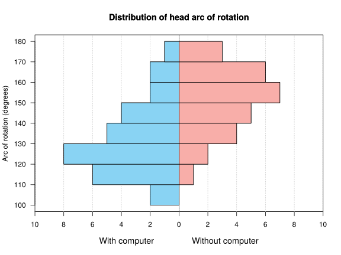

Physiotherapy exam 2018-04-09 Degrees: Physiotherapy Date: April 9, 2018 Question 1 The chart below describes the distribution of the head arc of rotation (in degrees) in people working with and without computers.  Plot the ogive of the head arc of rotation for people working with computers. If a person with a head arc of rotation less than or equal to 115 degrees is considered a person with reduced mobility, what percentage of people working with computers has reduced mobility? Which distribution has a more representative mean of the head arc of rotation, people working with computers or people not working with computers? Compute the global mean of the head arc of rotation. Which distribution is more asymmetric, people working with computers or people not working with computers? Which value of the head arc of rotation is relatively less, 150 degrees in people working with computers or 170 in people not working with computers? Use the following sums for the computations. With computer: $\sum x_i=3970$ degrees, $\sum x_i^2=534750$ degrees$^2$, $\sum (x_i-\bar x)^3=103662.22$ degrees$^3$ and $\sum (x_i-\bar x)^4=7903715.56$ degrees$^4$. Without computers: $\sum x_i=4230$ degrees, $\sum x_i^2=645900$ degrees$^2$, $\sum (x_i-\bar x)^3=-42359.69$ degrees$^3$ and $\sum (x_i-\bar x)^4=4101700.53$ degrees$^4$. Solution $F(115)=0.1667 \rightarrow 16.67%$ of people working with computers have reduced mobility. With computer: $\bar x=132.3333$ degrees, $s_x^2=312.8889$ degrees², $s_x=17.6887$ degrees and $cv_x=0.1337$ Without computer: $\bar x=151.0714$ degrees, $s_x^2=245.2806$ degrees², $s_x=15.6614$ degrees and $cv_x=0.1037$ The mean of people working without computer is more representative than the mean of people working with computers since its coefficient of variation is smaller. $\bar x=141.3793$. With computer $g_1=0.6243$ and without computer $g_1=-0.3938$. Therefore, the distribution of people working with computers is more asymmetric. Standard scores: $z(150)=0.9988$ and $z(170)=1.2086$. Therefore, an arc of rotation of 150 degrees in people working with computers is relatively smaller than an arc of rotation of 170 in people working without computers. Question 2 The concentration of a drug in blood $C$, in mg/dl, depends on time $t$, in hours, according to the following table: $$ \begin{array}{lrrrrrrr} \hline \mbox{Time} & 2 & 3 & 4 & 5 & 6 & 7 & 8\newline \mbox{Concentration} & 25 & 36 & 48 & 64 & 86 & 114 & 168\newline \hline \end{array} $$ Which regression model, the linear or the exponential, is more reliable to predict the concentration of the drug as a function of time? Use the best model to predict the concentration of drug in blood after $4.8$ hours. Use the following sums for the computations: $\sum x_i=35$, $\sum \log(x_i)=10.6046$, $\sum y_j=541$, $\sum \log(y_j)=29.147$, $\sum x_i^2=203$, $\sum \log(x_i)^2=17.5205$, $\sum y_j^2=56937$, $\sum \log(y_j)^2=124.0131$, $\sum x_iy_j=3328$, $\sum x_i\log(y_j)=154.3387$, $\sum \log(x_i)y_j=951.6961$, $\sum \log(x_i)\log(y_j)=46.0805$. Solution Linear model of Concentration on Time: $\bar x=5$ hours, $s_x^2=4$ hours² . $\bar y=77.2857$ mg/dl, $s_y^2=2160.7755$ (mg/dl)². $s_{xy}=89$ hours⋅mg/dl. Linear coefficient of determination of Concentration on Time $r^2=0.9165$. Exponential model of Concentration on Time: $\overline{\log(y)}=4.1639$ log(mg/dl), $s_{\log(y)}^2=0.3785$ log(mg/dl)². $s_{x\log(y)}=1.2291$ hours⋅log(mg/dl). Exponential coefficient of determination of Concentration on Time $r^2=0.9979$. Therefore, the exponential model explains better than the linear one the relation between the concentration and time, since its coefficient of determination is greater. 2. Exponential model of Concentration on Time: $y=e^{2.6275 + 0.3073x}$. $y(4.8)=60.4853$ mg/dl. Exam Statistics Biostatistics Previous Physiotherapy exam 2018-05-31 Next Physiotherapy exam 2017-06-02